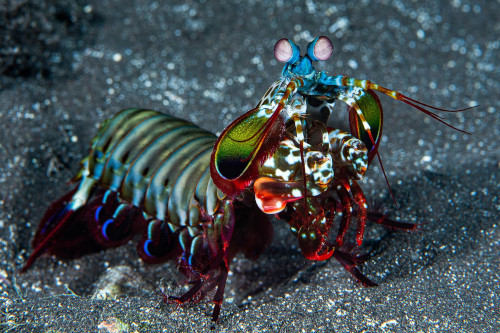
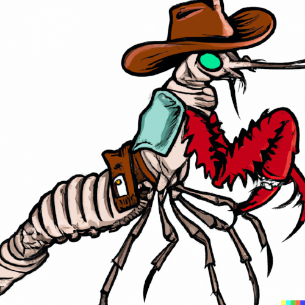
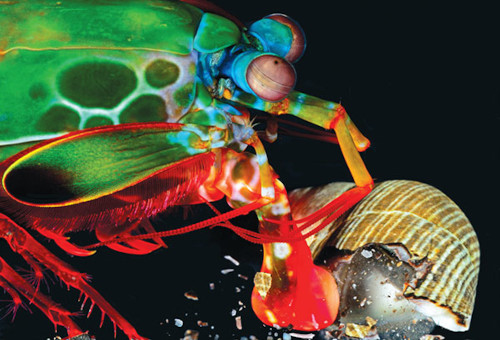
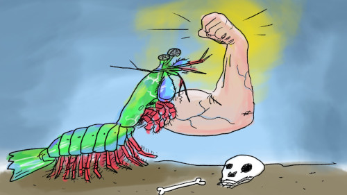

Stomatopodaestomatópodes, tamarutacas, lacraias-do-mar |
|
|---|---|

|
|
| Classificação científica | |
| Reino | Animalia |
| Filo | Arthropoda |
| Subfilo | Crustacea |
| Classe | Malacostraca |
| Subclasse | Hoplocarida |
| Ordem | Stomatopoda |
Terror dos Oceanos
Em abril de 1998, uma criatura agressiva chamada Tyson arrebentou a parede de vidro com espessura de um quarto de polegada de sua cela. Logo em seguida, ele foi contido por atendentes nervosos e transferido para uma instalação mais segura em Great Yarmouth. Ao contrário de seu homônimo peso-pesado, Tyson tinha apenas quatro polegadas de comprimento. No entanto, cientistas descobriram recentemente que Tyson, assim como todos os seus semelhantes, consegue desferir um dos golpes mais rápidos e poderosos da natureza. Ele era um camarão-mantis.
Os camarões-mantis são parentes agressivos de caranguejos e lagostas, e se alimentam de outros animais ao incapacitá-los com golpes devastadores. Suas armas secretas são um par de braços articulados dobrados sob sua cabeça, que eles podem desdobrar em velocidades incríveis.
As espécies "perfuradoras" possuem braços terminando em uma ponta diabólica e pontiaguda que usam para perfurar presas de corpo mole, como peixes. Já as espécies maiores "esmagadoras" têm braços terminando em pesados bastões e os utilizam para desferir golpes com a mesma força de uma bala de rifle.
A garra mais rápida do oeste
Quando Sheila Patek, uma pesquisadora da UC Berkeley, tentou estudar esses golpistas de peso em vídeo, ela enfrentou um obstáculo. "Nenhum dos nossos sistemas de vídeo de alta velocidade era rápido o suficiente para capturar o movimento com precisão", explicou ela. "Felizmente, uma equipe da BBC ofereceu-se para alugar uma câmera super alta velocidade como parte de sua série 'Animal Camera'."
Com esse equipamento de ponta, Patek conseguiu capturar imagens de um golpe do esmagador, desacelerado mais de 800 vezes. O que ela descobriu foi impressionante. A cada golpe, a borda do bastão se move a cerca de 50 mph, mais de duas vezes mais rápido do que os cientistas haviam estimado anteriormente.
"O golpe é um dos movimentos de membros mais rápidos no reino animal", diz Patek. "É especialmente impressionante considerando a considerável resistência imposta pela água."
A água é muito mais densa do que o ar, e até mesmo o artista marcial mais rápido teria dificuldade considerável para dar um soco nela. No entanto, o camarão-mantis termina seu golpe em menos de três milésimos de segundo, superando até mesmo seu homônimo terrestre.
Se o animal simplesmente esticasse o braço, como um humano, nunca conseguiria atingir velocidades tão incríveis. Em vez disso, os camarões-mantis usam um engenhoso sistema de armazenamento de energia. Uma vez que o braço está preparado, uma catraca o trava firmemente no lugar. Os músculos grandes do braço superior se contraem e acumulam energia. Quando a trava é liberada, toda essa energia é liberada de uma vez e o braço inferior é lançado para a frente.
Mas Patek descobriu que mesmo esse sistema não conseguia explicar a velocidade do camarão-mantis. Em vez disso, a chave para o soco está em uma pequena estrutura no braço que se parece com uma sela ou um chip de batata Pringle.
Quando o braço está preparado, essa estrutura é comprimida e age como uma mola, acumulando ainda mais energia. Quando a trava é liberada, a mola se expande e proporciona um impulso extra para o bastão, ajudando a acelerá-lo em até 10.000 vezes a força da gravidade.
Bolhas assassinas
O braço do esmagador é realmente uma tecnologia natural de ponta. "Molas em forma de sela são bem conhecidas por engenheiros e arquitetos", explica Patek, "mas são incomuns em sistemas biológicos. Curiosamente, um artigo recente mostrou que uma mola de forma semelhante fecha a armadilha da planta carnívora Dioneia."
As câmeras de Patek revelaram uma surpresa ainda maior: cada golpe do esmagador produzia pequenos flashes de luz no momento do impacto. Eles são emitidos porque o bastão se move tão rapidamente que reduz a pressão da água à sua frente, fazendo-a entrar em ebulição.
Isso libera pequenas bolhas que colapsam quando a pressão da água se normaliza, liberando uma quantidade tremenda de energia. Esse processo, chamado de cavitação, é tão destrutivo que pode danificar as hélices de aço inoxidável de embarcações. Combinado com a força do próprio golpe, nenhum animal nos mares tem chance.
Grandes esmagadores podem até se alimentar de caranguejos, dobrando sua espessa armadura tão facilmente quanto fazem com o vidro de aquários. E frequentemente são vistos atacando peixes e polvos muito maiores, que têm o azar de passar perto de suas tocas.
Não apenas um bom gancho direito
Alguns cientistas acreditam que a natureza beligerante dos camarões-mantis evoluiu porque as fendas de rochas em que habitam são ferozmente disputadas. Essa competição também tornou esses animais mais inteligentes do que a média dos camarões. Eles são os únicos invertebrados capazes de reconhecer outros indivíduos de sua espécie e podem lembrar-se do resultado de uma luta contra um rival por até um mês. E desde que escrevi este artigo, publiquei em meu blog sobre os incríveis olhos dos camarões-mantis, que possuem uma forma de visão única no mundo animal. Só podemos especular se esses animais possuem outras adaptações que quebram recordes e ainda estão por ser descobertas.
Para saber mais sobre os camarões-mantis, confira o excelente "Guia do Observador dos Estomatópodes".
Este artigo ganhou um prêmio de segundo lugar no concurso Jovem Escritor de Ciências do Daily Telegraph em 2005.
Fatos sobre o Stomatopoda
Possuem visão incrível
Possuem um soco poderoso
São exclusivamente carnívoros
O segundo par de patas é muito desenvolvido
Atualização: No momento da escrita, o soco do camarão-mantis era um forte candidato ao movimento mais rápido no mundo natural. No entanto, ele foi superado pela mordida da formiga-trapadora, muito bem nomeada, cujas mandíbulas se fecham com uma velocidade máxima quase inacreditável de 140 mph. Essa descoberta foi feita pela própria Sheila Patek. O soco do camarão-mantis ainda é o movimento de membro mais rápido do mundo, mas as mandíbulas da formiga-trapadora a deixam para trás em seu rastro.